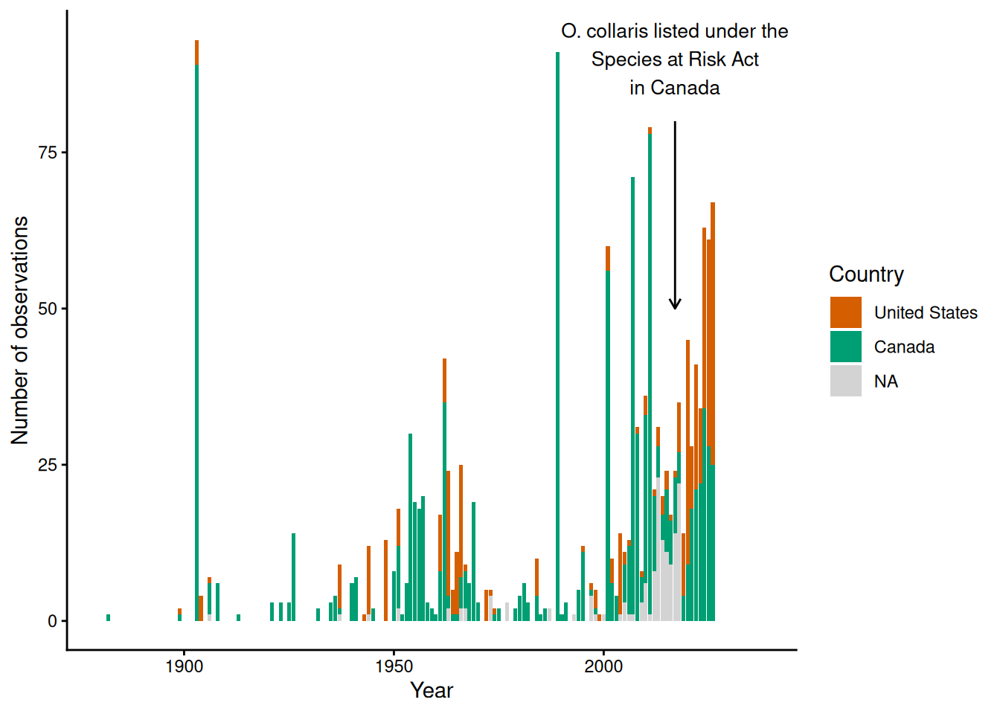

install.packages("usethis")
library(usethis)
# push the repo to GitHub!
usethis::use_github()
# create an README file for the repo
# this is important for describing what the repo is about
usethis::use_readme_md()OS_course_Fri_exercise
Final class exercise for the OS course in Finse 2026
1. Create RStudio project and connect to GitHub
There are several ways of creating a directory in GitHub. I find easiest to create new R project in RStudio as a local repository and then push it to GitHub.
The first thing to do (that I always forget!) is to commit at least one file, before you can push the repo to GitHub. Usually these will be files that are automatically generated (.gitignore and the .Rproj itself). Once that is done, you can push your repo to GitHub. A useful package here is usethis.
I have also created a new quarto file to work on my script and the final output (this one), and updated the README file to include relevant information.
2. Make content
2.1 Adding a dataset
For the exercise I will download data from GBIF for the collared pika (Ochotona collaris), a North American lagomorph that occurs in Northwest Canada and Alaska.
library(rgbif)
# check the species name on GBIF
name_backbone("Ochotona collaris")
# download occurrence data for Ochotona collaris
species_data <- occ_data(scientificName = "Ochotona collaris")Because the code above can take some time to run, I have also saved the download from GBIF and saved it as a csv file ocollaris_download.csv that can be directly used.
library(readr)
species_data <- read_delim("ocollaris_download.csv",
delim = "\t", escape_double = FALSE, trim_ws = TRUE)2.2 Cleaning the data
First of all, load the libraries we will use:
library(tidyverse)The dataset contains too many columns that we are not going to use.
species_data <- species_data |>
select(scientificName, genus, species, countryCode,
decimalLatitude, decimalLongitude, coordinateUncertaintyInMeters, year)2.3 Making one figure
We will plot the number of collared pika observations per year in each country.
# prepare the dataset
summary_Ocollaris <- species_data |>
count(year, countryCode, name = "n_observations")
# plot the figure
ggplot(summary_Ocollaris, aes(x = year, y = n_observations, fill = countryCode)) +
geom_col() +
annotate("segment",
x = 2017, xend = 2017,
y = 80, yend = 50,
arrow = arrow(length = unit(0.2, "cm")),
linewidth = 0.5) +
annotate("text", x = 2017, y = 90,
label = "O. collaris listed under the\nSpecies at Risk Act\nin Canada",
hjust = 0.5, size = 3.5) +
labs(x = "Year",
y = "Number of observations",
fill = "Country") +
scale_x_continuous(limits = c(1880, 2038))+
scale_fill_manual(labels = c("United States", "Canada"),
values = c("US" = "#009E73",
"CA" = "#D55E00"),
na.value = "#D3D3D3") +
theme_classic()Warning: Removed 4 rows containing missing values or values outside the scale range
(`geom_col()`).
That is impressive - observations go back to 1880!
2.4 Using at least one function
Just as an exercise, I will create a function to plot my figure directly from species occurrence data. Ideally the function should be more general, but this works for now :)
plot_obs_over_time <- function(dataset) {
dataset |>
# prepare the dataset
count(year, countryCode, name = "n_observations") |>
# plot the figure
ggplot(aes(x = year, y = n_observations, fill = countryCode)) +
geom_col() +
annotate("segment",
x = 2017, xend = 2017,
y = 80, yend = 50,
arrow = arrow(length = unit(0.2, "cm")),
linewidth = 0.5) +
annotate("text", x = 2017, y = 90,
label = "O. collaris listed under the\nSpecies at Risk Act\nin Canada",
hjust = 0.5, size = 3.5) +
labs(x = "Year", y = "Number of observations", fill = "Country") +
scale_x_continuous(limits = c(1850, 2038))+
scale_fill_manual(labels = c("United States", "Canada"),
values = c("US" = "#009E73",
"CA" = "#D55E00"),
na.value = "#D3D3D3") +
theme_classic()
}
plot_obs_over_time(species_data)3. Noas comment (25.10.2026) :
I didn’t know the collared pika before, cool animal :D
The annotate function in ggplot is new to me as weel, nice tool with the arrow!
In the chunk of code embedded in the text after the figure the {r} was missing in order to let it run and show the year in the text. Beside that the code run smoothly on my computer!
Very nice and reproducible!!!